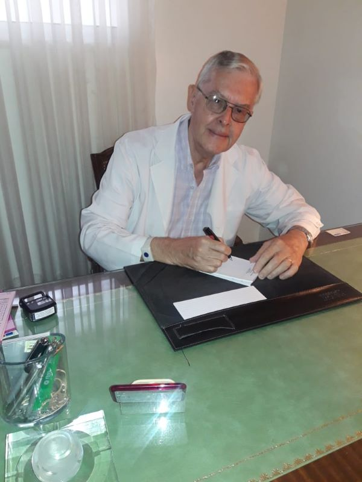

{% extends 'blog/master.html' %}
{% block content %}
Mi perfil ,con algo de autobiografía.
Mi nombre es José Davidow. Soy médico, graduado en la Facultad de Medicina de la Universidad Nacional de Rosario, especialista en Clínica Médica, (Medicina Interna) y Terapia Intensiva.
Docente de Medicina Interna en la Facultad de Ciencias Médicas, durante muchos años. Formador de Residentes de Clínica Médica. Jefe de una Sala de Terapia Intensiva durante 30 años.
Inicié mi contacto, como graduado, con la Medicina de “todos los días”, en la Sala IV del Hospital Español de Rosario. Sala de Clinica Médica, que dirigía el Profesor Juan Manuel Gonzalez, un preclaro Maestro de la Medicina Interna. De quien sigo recordando muchas observaciones brillantes.
La información, en ese tiempo, se centraba en las lecturas de los textos clásicos como la Medicina Interna de Harrison, o la de Cecil Loeb, cuyas nuevas ediciones se esperaban con ansiedad. Y la llegada en papel del New England Journal of Medicine, Lancet, JAMA, Annals of Internal Medicine, British Medical Journal y otras. Los Cursos y los Congresos.
Épocas lejanas en las que, increíblemente, para los jóvenes, no había Internet. La biblioteca de la Facultad de Medicina y la del Círculo Médico, compraban las revistas extranjeras; años si, años no, según los avatares de la economía Argentina.
En los primeros años de graduado me interesé por la Medicina Psicosomática. Hice cursos sobre estos temas y participé de un “Grupo Operativo de Aprendizaje”, como se lo denominaba en esa época, durante varios años. Era la Medicina Psicosomática clásica, al estilo Franz Alexander, con fuerte impronta psicoanalítica. También un breve tiempo en un grupo de estudio del Psicoanálisis. Hoy creo que las ideas y conceptos de aquella Medicina Psicosomática, o del Psicoanálisis han sido superados.
Me sirvió, en mi práctica, el haber frecuentado estas teorías, descartarlas y seguir interesado en los progresos de la psicología científica. Valoro haber adquirido la capacidad de escuchar a los pacientes.
He presidido la Asociación de Medicina Interna de Rosario y la Asociación de Terapia Intensiva de Rosario. Soy Miembro Fundador de la Sociedad Argentina de Terapia Intensiva. He participado con ponencias, actuado como panelista y presidido Congresos de Medicina Interna y de Terapia Intensiva, nacionales e internacionales.
En la actualidad, estoy retirado de la Terapia Intensiva. Por la tarde atiendo mi consultorio de Clinica Médica. Dispongo de horas libres, que dedico leer medicina y leer sobre las cosas que me interesan.
De ellas trata este blog. De las cosas que me interesan y creo oportuno hacer saber y comentar. Trato de hacer llegar información que creo debe ser destacada y a menudo no lo es, a veces controvertida.
Expreso opiniones. Sobre muchos temas solo podemos tener opiniones, después de sopesar la información, siempre cambiante. Información que seguramente se aproxima a la verdad, muy lentamente, en idas y venidas.
Me preocupan muchas cosas de la Medicina actual. Lo cierto y lo incierto. La circunstancia de que lo que creemos cierto, termina en pocos años en ser falso, a veces catastróficamente falso.
Me preocupan las influencias que determinan la falsedad de muchas publicaciones. Dejando de lado el simple fraude, lamentablemente frecuente, ciertas influencias, que han tomado ya la forma de sistémicas. (1.2.3)
Me asombra el surgimiento de la anticiencia en general y en medicina en particular, la magia rediviva. La aceptación de teorías médicas absurdas, el “terraplanismo médico”, el peligroso movimiento antivacunas.
Interesado en la Medicina de la Longevidad, la Biogerontologia. Intento trasmitir información concerniente a este campo.
Soy viudo, padre de 4 hijos, 2 de ellos médicos. Uno que hace Medicina Interna y Terapia Intensiva, una hija Neuróloga, una Contadora y una Abogada. Abuelo de 7 nietos.
Leo libros de ciencia, de historia y de temas políticos. Lector de Borges, encuentro que se lo puede releer asiduamente.
No hago deportes. De joven practicaba judo. Actualmente voy a un gimnasio, casi todos los días, camino en la cinta y luego hago pesas. También al sauna del mismo gimnasio. Practico el ayuno intermitente.
1. Smith R. The trouble with medical journals. J R Soc Med. 2006; 99(3):115–119.
2. Ioannidis, John. (2018). Professional Societies Should Abstain From Authorship of Guidelines and Disease Definition Statements.Circ Cardiovasc Qual Outcomes. 2018 Oct; 11(10):e004889.
3. Ioannidis JP. The Mass Production of Redundant, Misleading, and Conflicted Systematic Reviews and Meta-analyses. Milbank Q. 2016; 94(3):485–514

{% endblock %}